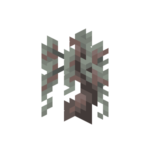

Objets
Pousse de chêne pâle
Pousse de chêne pâle
Les pousses de chêne pâle peuvent être découvertes sous le feuillage des arbres. Ces jeunes plants permettent de faire pousser de nouveaux arbres de chêne pâle. On peut aussi les placer dans des pots de fleurs pour créer une décoration naturelle et minimaliste.
Bateaux en chêne pâle
Les planches de chêne pâle peuvent être utilisées pour créer des bateaux classiques ainsi que des bateaux avec coffre. Ces embarcations, caractérisées par leur couleur grise unique, s'intègrent parfaitement lors de l'exploration des biomes aux couleurs plus douces.
Bateau en bois de chêne pâle
Bateau de stockage en bois de chêne pâle
Briques de résine
Les briques de résine sont des matériaux de construction robustes créés à partir d'amas de résine durcie. Ces briques servent non seulement à la construction, mais peuvent également être employées comme ornements pour personnaliser les armures grâce à la table de forge.
Une brique de résine
Craft d'une brique de résine
Utilisation de la résine pour personnaliser une armure en orange
 Blocs
Blocs